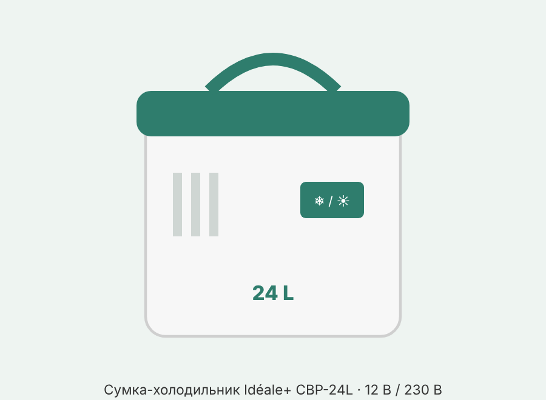
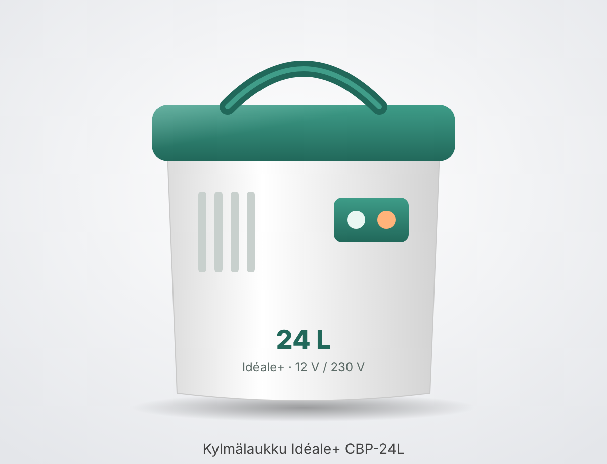

• Idéale+ CBP-24L, термоэлектрическая сумка-холодильник/подогреватель на 24 л (Kylmä-/lämpölaukku 24 L / Kyl-/värmebox 24 L) • Продавец/импортёр: Tokmanni Oy, Финляндия; на этикетке дата 04/2023 • На tokmanni.fi продаётся как «Kylmälaukku 24 l 12V/230V», EAN 6419860866499 • Работает на элементе Пельтье (без компрессора и хладагента), изоляция — полиуретан • Официальная инструкция в интернете не найдена; пункты с пометкой [типично] взяты из инструкций аналогичных термоэлектрических боксов, для этой модели не подтверждены
• В машине: кабель 12 В с вилкой прикуривателя (DC 12 V) • Дома: сетевой кабель 230 В (AC 230 V); оба кабеля входят в комплект • [типично] Нельзя подключать оба кабеля одновременно — только один источник питания • [типично] В вилке 12 В обычно стоит предохранитель (у аналогов 5 А); если сгорел — заменить на такой же
• Переключатель режимов холод (COLD) / тепло (WARM/HOT) • Охлаждение: примерно на 14–18 °C ниже температуры окружающего воздуха (данные Tokmanni). Это не морозильник: при +30 °C снаружи внутри будет около +12…+16 °C • Подогрев: до 50–65 °C (данные Tokmanni) • [типично] Подогрев предназначен для поддержания тепла уже горячей еды, а не для разогрева холодной • [типично] При переключении между холодом и теплом выключить и подождать около 5 минут
• Продукты и напитки заранее охладить в обычном холодильнике — бокс поддерживает холод, а не замораживает • Можно предварительно включить пустой бокс на охлаждение до загрузки [типично] • Не закрывать вентиляционные решётки и вентилятор, не ставить в траву/песок • [типично] Отступ от стены и других предметов — не меньше 10 см, нужен свободный поток воздуха • Ставить в тень, подальше от солнца и обогревателей; не использовать в закрытом багажнике или тесном закрытом пространстве [типично] • Открывать крышку пореже — каждое открытие заметно снижает эффективность • Жидкости перевозить в закрытой таре
• На странице Tokmanni ECO-режим не упоминается; заявлены только режимы холод и тепло • [типично] У части аналогов есть ECO (экономичный режим, только от 230 В, охлаждает слабее — примерно на 6–10 °C ниже окружающей). Есть ли он у CBP-24L — проверить по переключателю на самом боксе
• Перед чисткой отключить от питания • [типично] Снаружи — мягкая ткань и мягкое моющее средство; внутри — губка и чистая вода, затем вытереть насухо • [типично] Не мыть под струёй, не погружать в воду, не мыть в посудомойке; без абразивов, растворителей и спирта • [типично] В жару под крышкой может собираться конденсат — это не неисправность, вытереть сухой тканью • Хранить сухим и чистым; оставлять крышку приоткрытой, чтобы не было запаха и плесени (общая рекомендация, в найденных инструкциях не указано) • Периодически протирать уплотнитель крышки [типично]
• [типично] Не оставлять подключённым к розетке 12 В машины надолго при выключенном двигателе — разряжает аккумулятор; лучше пользоваться при работающем двигателе • [типично] Не использовать при повреждённом корпусе, шнуре или вилке; не тянуть вилку за провод; ремонт — только в сервисе • [типично] Держать вдали от открытого огня, обогревателей, газовых плит; беречь от воды и дождя • [типично] Дети и лица с ограниченными возможностями — только под присмотром
Все пункты [типично], по инструкциям аналогов: • Не работает от 12 В — нет питания в гнезде: включить зажигание или попробовать другое гнездо • Питание есть, но не работает — грязная вилка/гнездо прикуривателя: отключить и почистить • Сгорел предохранитель в вилке 12 В — заменить на такой же (у аналогов 5 А) • Сгорел предохранитель гнезда в машине — заменить по инструкции к автомобилю (обычно 10–15 А) • Плохо охлаждает — прямое солнце/жара, закрыта вентиляция, пыльный вентилятор, слишком близко к стене: переставить, очистить, отодвинуть • Не охлаждает совсем, необычный шум или запах гари — выключить, отключить и обратиться в сервис
• Объём: 24 л • Питание: DC 12 В / AC 230 В • Потребление от 12 В: холод 45 Вт, тепло 40 Вт • Потребление от 230 В: холод 60 Вт, тепло 55 Вт • Охлаждение: на 14–18 °C ниже окружающей температуры • Подогрев: 50–65 °C • Охлаждающий элемент: термоэлектрический, бесщёточный вентилятор/элемент (по описанию Tokmanni «harjaton») • Изоляция: полиуретан • Размеры и вес: в найденных источниках не указаны • Источник: этикетка (04/2023) и tokmanni.fi
• Idéale+ CBP-24L, 24 l thermoelectric cool/warm box (Kylmä-/lämpölaukku 24 L / Kyl-/värmebox 24 L) • Seller/importer: Tokmanni Oy, Finland; the label is dated 04/2023 • Sold on tokmanni.fi as "Kylmälaukku 24 l 12V/230V", EAN 6419860866499 • Works with a Peltier element (no compressor or refrigerant), polyurethane insulation • No official manual found online; points marked [typical] are taken from manuals of similar thermoelectric boxes and are not confirmed for this model
• In the car: 12 V cable with a cigarette-lighter plug (DC 12 V) • At home: 230 V mains cable (AC 230 V); both cables are included • [typical] Do not connect both cables at the same time — only one power source • [typical] The 12 V plug usually contains a fuse (5 A on similar models); if blown, replace with an identical one
• Mode switch cool (COLD) / warm (WARM/HOT) • Cooling: about 14–18 °C below the ambient air temperature (Tokmanni data). This is not a freezer: at +30 °C outside it will be about +12…+16 °C inside • Warming: up to 50–65 °C (Tokmanni data) • [typical] Warming is meant to keep already hot food warm, not to heat up cold food • [typical] When switching between cool and warm, switch off and wait about 5 minutes
• Pre-chill food and drinks in an ordinary fridge — the box keeps things cold, it does not freeze them • You can switch the empty box on to cool before loading [typical] • Do not cover the ventilation grilles and fan, do not place it on grass/sand • [typical] Keep at least 10 cm from walls and other objects; free airflow is needed • Place in the shade, away from the sun and heaters; do not use in a closed boot or a cramped enclosed space [typical] • Open the lid as seldom as possible — each opening noticeably reduces efficiency • Carry liquids in closed containers
• The Tokmanni page does not mention an ECO mode; only cool and warm modes are stated • [typical] Some similar models have ECO (economy mode, on 230 V only, cools less — about 6–10 °C below ambient). Whether the CBP-24L has it — check the switch on the box itself
• Disconnect from the power supply before cleaning • [typical] Outside — soft cloth and mild detergent; inside — sponge and clean water, then wipe dry • [typical] Do not wash under running water, do not immerse in water, do not put in the dishwasher; no abrasives, solvents or alcohol • [typical] In hot weather condensation may collect under the lid — this is not a fault, wipe with a dry cloth • Store dry and clean; leave the lid ajar to prevent odour and mould (general advice, not stated in the manuals found) • Wipe the lid seal from time to time [typical]
• [typical] Do not leave it plugged into the car's 12 V socket for long with the engine off — it drains the battery; better to use it with the engine running • [typical] Do not use with a damaged housing, cord or plug; do not pull the plug out by the cord; repairs only by a service centre • [typical] Keep away from open flames, heaters, gas stoves; protect from water and rain • [typical] Children and persons with reduced capabilities — only under supervision
All points [typical], based on manuals of similar models: • Does not work on 12 V — no power in the socket: switch on the ignition or try another socket • There is power but it does not work — dirty plug/lighter socket: disconnect and clean • Fuse in the 12 V plug blown — replace with an identical one (5 A on similar models) • Car socket fuse blown — replace according to the car's manual (usually 10–15 A) • Poor cooling — direct sun/heat, ventilation blocked, dusty fan, too close to a wall: move it, clean it, move it away • No cooling at all, unusual noise or burning smell — switch off, disconnect and contact a service centre
• Capacity: 24 l • Power supply: DC 12 V / AC 230 V • Consumption on 12 V: cooling 45 W, warming 40 W • Consumption on 230 V: cooling 60 W, warming 55 W • Cooling: 14–18 °C below ambient temperature • Warming: 50–65 °C • Cooling element: thermoelectric, brushless fan/element (Tokmanni description: "harjaton") • Insulation: polyurethane • Dimensions and weight: not given in the sources found • Source: label (04/2023) and tokmanni.fi

• Idéale+ CBP-24L, termosähköinen 24 litran kylmä-/lämpölaukku (Kylmä-/lämpölaukku 24 L / Kyl-/värmebox 24 L) • Myyjä/maahantuoja: Tokmanni Oy, Suomi; tarrassa päiväys 04/2023 • Myynnissä tokmanni.fi-sivulla nimellä "Kylmälaukku 24 l 12V/230V", EAN 6419860866499 • Toimii Peltier-elementillä (ei kompressoria eikä kylmäainetta), eristeenä polyuretaani • Virallista käyttöohjetta ei löytynyt verkosta; merkinnällä [tyypillinen] varustetut kohdat on otettu vastaavien termosähköisten laukkujen ohjeista, eikä niitä ole vahvistettu tälle mallille
• Autossa: 12 V johto tupakansytytinpistokkeella (DC 12 V) • Kotona: 230 V verkkojohto (AC 230 V); molemmat johdot sisältyvät pakkaukseen • [tyypillinen] Molempia johtoja ei saa kytkeä samanaikaisesti — vain yksi virtalähde kerrallaan • [tyypillinen] 12 V pistokkeessa on yleensä sulake (vastaavissa malleissa 5 A); jos se on palanut, vaihda samanlaiseen
• Tilakytkin: kylmä (COLD) / lämmin (WARM/HOT) • Jäähdytys: noin 14–18 °C ympäröivän ilman lämpötilaa alemmaksi (Tokmannin tiedot). Laukku ei ole pakastin: kun ulkona on +30 °C, sisällä on noin +12…+16 °C • Lämmitys: 50–65 °C:seen (Tokmannin tiedot) • [tyypillinen] Lämmitys on tarkoitettu jo valmiiksi lämpimän ruoan pitämiseen lämpimänä, ei kylmän ruoan lämmittämiseen • [tyypillinen] Kun vaihdat kylmän ja lämpimän välillä, sammuta laite ja odota noin 5 minuuttia
• Jäähdytä ruoat ja juomat etukäteen tavallisessa jääkaapissa — laukku pitää ne kylminä, mutta ei pakasta • Tyhjän laukun voi kytkeä jäähtymään ennen täyttämistä [tyypillinen] • Älä peitä tuuletusritilöitä ja puhallinta, älä aseta laukkua nurmikolle/hiekkaan • [tyypillinen] Jätä vähintään 10 cm etäisyys seinään ja muihin esineisiin, ilman täytyy päästä kiertämään vapaasti • Sijoita varjoon, kauas auringosta ja lämmittimistä; älä käytä suljetussa tavaratilassa tai ahtaassa suljetussa tilassa [tyypillinen] • Avaa kantta mahdollisimman harvoin — jokainen avaus heikentää tehoa selvästi • Kuljeta nesteet suljetuissa astioissa
• Tokmannin sivulla ei mainita ECO-tilaa; ilmoitettu on vain kylmä- ja lämpötila • [tyypillinen] Joissakin vastaavissa malleissa on ECO (säästötila, vain 230 V:lla, jäähdyttää heikommin — noin 6–10 °C ympäristöä alemmaksi). Onko sellainen CBP-24L:ssä — tarkista laukun omasta kytkimestä
• Irrota laite virtalähteestä ennen puhdistusta • [tyypillinen] Ulkopuoli — pehmeä liina ja mieto pesuaine; sisäpuoli — sieni ja puhdas vesi, sitten kuivaksi pyyhkiminen • [tyypillinen] Älä pese juoksevan veden alla, älä upota veteen, älä pese astianpesukoneessa; älä käytä hankaavia aineita, liuottimia tai alkoholia • [tyypillinen] Helteellä kannen alle voi kertyä kondenssivettä — se ei ole vika, pyyhi kuivalla liinalla • Säilytä kuivana ja puhtaana; jätä kansi raolleen, jottei synny hajua ja hometta (yleinen suositus, ei mainittu löydetyissä ohjeissa) • Pyyhi kannen tiiviste aika ajoin [tyypillinen]
• [tyypillinen] Älä jätä laukkua pitkäksi aikaa kytketyksi auton 12 V pistorasiaan moottorin ollessa sammutettuna — se tyhjentää akun; käytä mieluiten moottorin käydessä • [tyypillinen] Älä käytä, jos runko, johto tai pistoke on vaurioitunut; älä irrota pistoketta johdosta vetämällä; korjaukset vain huollossa • [tyypillinen] Pidä kaukana avotulesta, lämmittimistä ja kaasuliesistä; suojaa vedeltä ja sateelta • [tyypillinen] Lapset ja henkilöt, joiden toimintakyky on rajoittunut — vain valvonnassa
Kaikki kohdat [tyypillinen], vastaavien mallien ohjeiden mukaan: • Ei toimi 12 V:lla — pistorasiassa ei ole virtaa: kytke virta-avain päälle tai kokeile toista pistorasiaa • Virtaa on, mutta laite ei toimi — tupakansytytinpistoke/-pistorasia on likainen: irrota ja puhdista • 12 V pistokkeen sulake on palanut — vaihda samanlaiseen (vastaavissa malleissa 5 A) • Auton pistorasian sulake on palanut — vaihda auton käyttöohjeen mukaan (yleensä 10–15 A) • Jäähdyttää huonosti — suora auringonpaiste/kuumuus, tuuletus tukossa, pölyinen puhallin, liian lähellä seinää: siirrä, puhdista, siirrä kauemmas • Ei jäähdytä lainkaan, epätavallista ääntä tai palaneen hajua — sammuta, irrota virtalähteestä ja ota yhteys huoltoon
• Tilavuus: 24 l • Virransyöttö: DC 12 V / AC 230 V • Kulutus 12 V:lla: jäähdytys 45 W, lämmitys 40 W • Kulutus 230 V:lla: jäähdytys 60 W, lämmitys 55 W • Jäähdytys: 14–18 °C ympäristön lämpötilaa alemmaksi • Lämmitys: 50–65 °C • Jäähdytyselementti: termosähköinen, harjaton puhallin/elementti (Tokmannin kuvauksen mukaan "harjaton") • Eriste: polyuretaani • Mitat ja paino: ei ilmoitettu löydetyissä lähteissä • Lähde: tarra (04/2023) ja tokmanni.fi